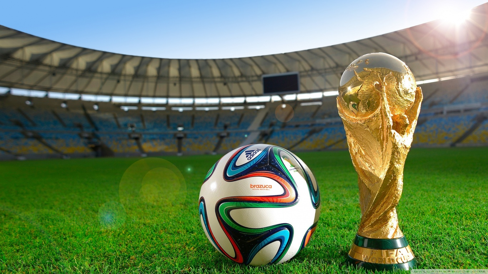

APA ITU SEPAK BOLA???
Kalian semua pasti sudah tau dan pernah nonton sepak bola, pada kesempatan kali ini kita akan membahas tentang sepak bola. Sepak bola asosiasi, adalah cabang olahraga yang menggunakan bola yang umumnya terbuat dari bahan kulit dan dimainkan oleh dua tim yang masing-masing beranggotakan 11 (sebelas) orang pemain inti dan beberapa pemain cadangan.
Memasuki abad ke-21, olahraga ini telah dimainkan oleh lebih dari 250 juta orang di 200 negara, yang menjadikannya olahraga paling populer di dunia.
Sepak bola bertujuan untuk mencetak gol sebanyak-banyaknya dengan memasukan bola ke gawang lawan. Sepak bola dimainkan dalam lapangan terbuka yang berbentuk persegi panjang, di atas rumput atau rumput sintetis.
SEJARAH SEPAK BOLA
Sejarah olahraga sepak bola (permainan menendang bola) dimulai sejak abad ke-2 dan ke-3 sebelum Masehi di Tiongkok. Pada masa Dinasti Han tersebut, masyarakat menggiring bola kulit dengan menendangnya ke jaring kecil.
Permainan serupa juga dimainkan di Jepang dengan sebutan Kemari. Di Italia, permainan menendang dan membawa bola juga digemari terutama mulai abad ke-16.
Sepak bola modern mulai berkembang di Inggris dengan menetapkan peraturan-peraturan dasar dan menjadi sangat digemari oleh banyak kalangan.Di beberapa kompetisi, permainan ini menimbulkan banyak kekerasan selama pertandingan sehingga akhirnya Raja Edward III melarang olahraga ini dimainkan pada tahun 1365.
Raja James I dari Skotlandia juga mendukung larangan untuk memainkan sepak bola. Pada tahun 1815, sebuah perkembangan besar menyebabkan sepak bola menjadi terkenal di lingkungan universitas dan sekolah. Kelahiran sepak bola modern terjadi di Freemasons Tavern pada tahun 1863 ketika 11 sekolah dan klub berkumpul dan merumuskan aturan baku untuk permainan tersebut.
Bersamaan dengan itu, terjadi pemisahan yang jelas antara olahraga rugby dengan sepak bola (soccer).Pada tahun 1869, membawa bola dengan tangan mulai dilarang dalam sepak bola. Selama tahun 1800-an, olahraga tersebut dibawa oleh pelaut, pedagang, dan tentara Inggris ke berbagai belahan dunia.
Pada tahun 1904, asosiasi tertinggi sepak bola dunia (FIFA) dibentuk dan pada awal tahun 1900-an, berbagai kompetisi dimainkan diberbagai negara. Olahraga ini juga digemari terutama mulai abad ke-16.
KEJUARAAN INTERNASIONAL SEPAK BOLA
Kejuaraan sepak bola internasional terbesar ialah Piala Dunia yang diselenggarakan oleh Fédération Internationale de Football Association (FIFA). Piala Dunia diadakan setiap empat tahun sekali dan dimulai di Uruguay pada tahun 1930.Pencetus ide tersebut adalah Jules Rimet, seorang pengacara dan pengusaha Prancis yang terinspirasi setelah menonton Olimpiade Paris tahun 1924.
Kompetisi internasional tertua di dunia adalah Copa America yang mempertandingkan tim-tim dalam wilayah Amerika Selatan setiap dua tahun sekali.Copa America pertama kali diadakan tahun 1916 dan diikuti oleh 10 negara yang akhirnya membentuk The South American Football Confederation (Conmebol).Untuk wilayah Amerika Utara, The Confederation of North, Central American and Caribbean Association Football (CONCACAF) menyelenggarakan kompetisi internasional setiap empat tahun sekali yang disebut Piala Emas CONCACAF. Di kawasan Asia, termasuk Australia dan Timor Leste negara-negara yang tergabung dalam Asian Football Confederation (AFC), mengadakan kompetisi internasional pertama tingkat Asia pada tahun 1956 di Hongkong yang disebut Piala Asia.
copyrigt ©Anang Syah Amirul Haqim 2020